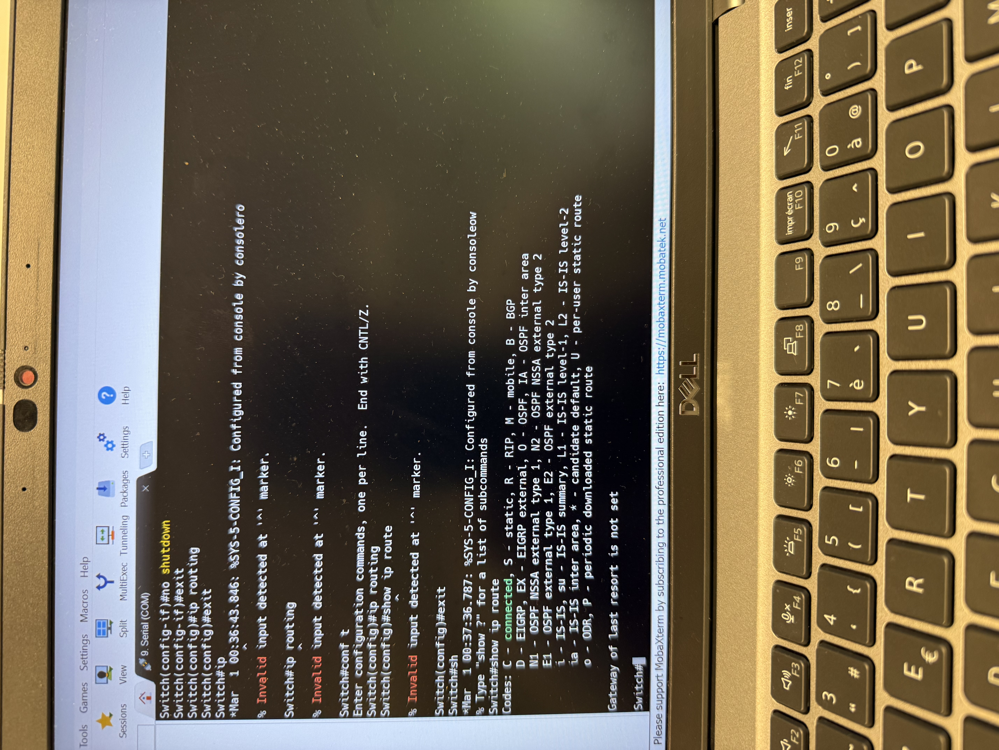
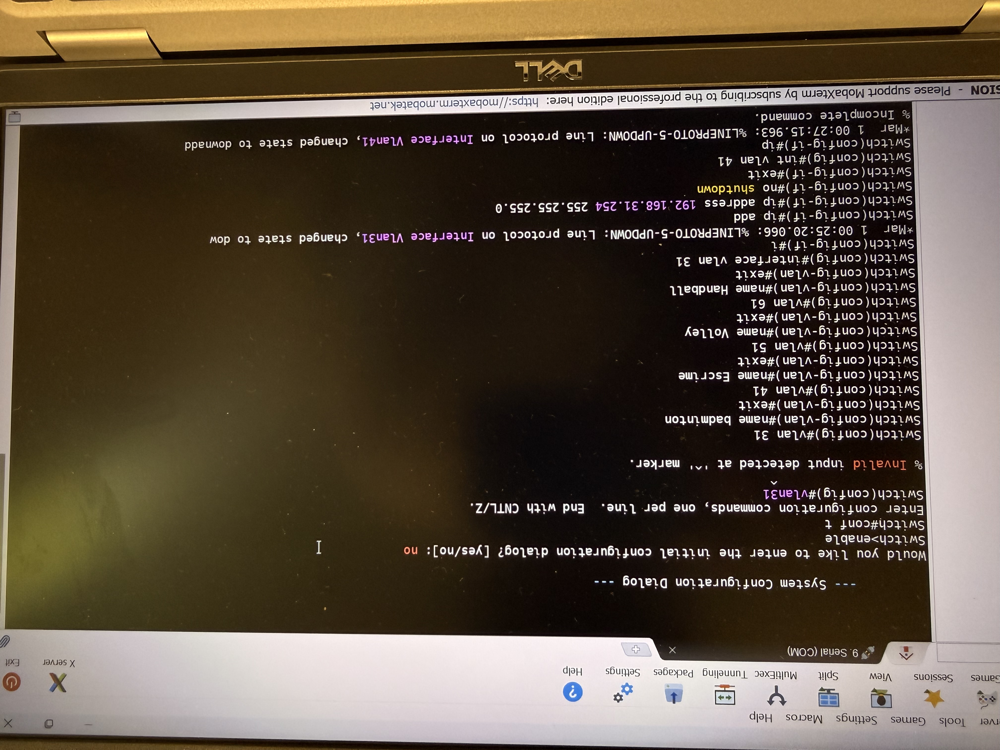
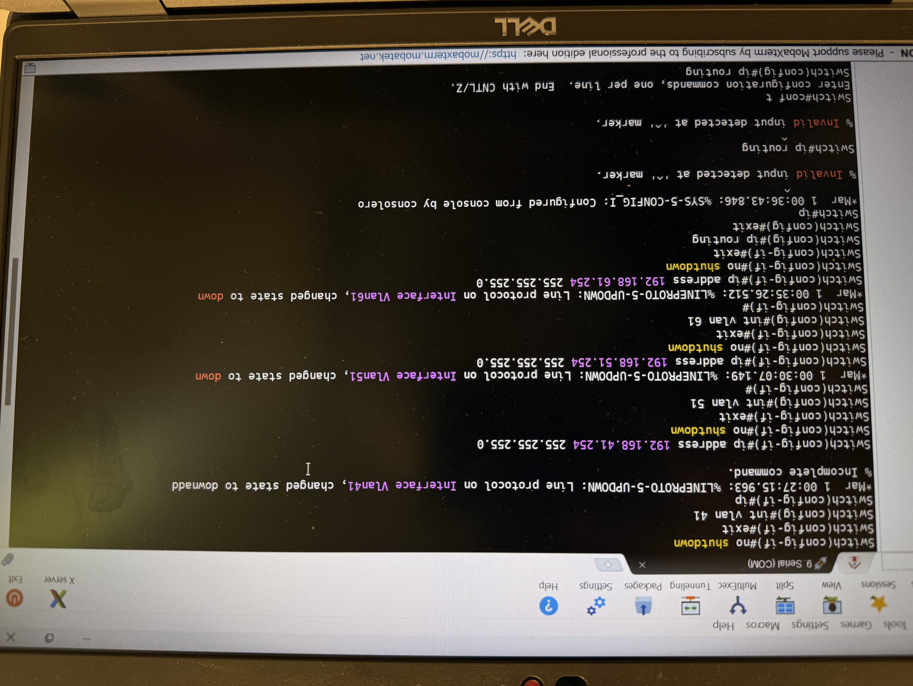
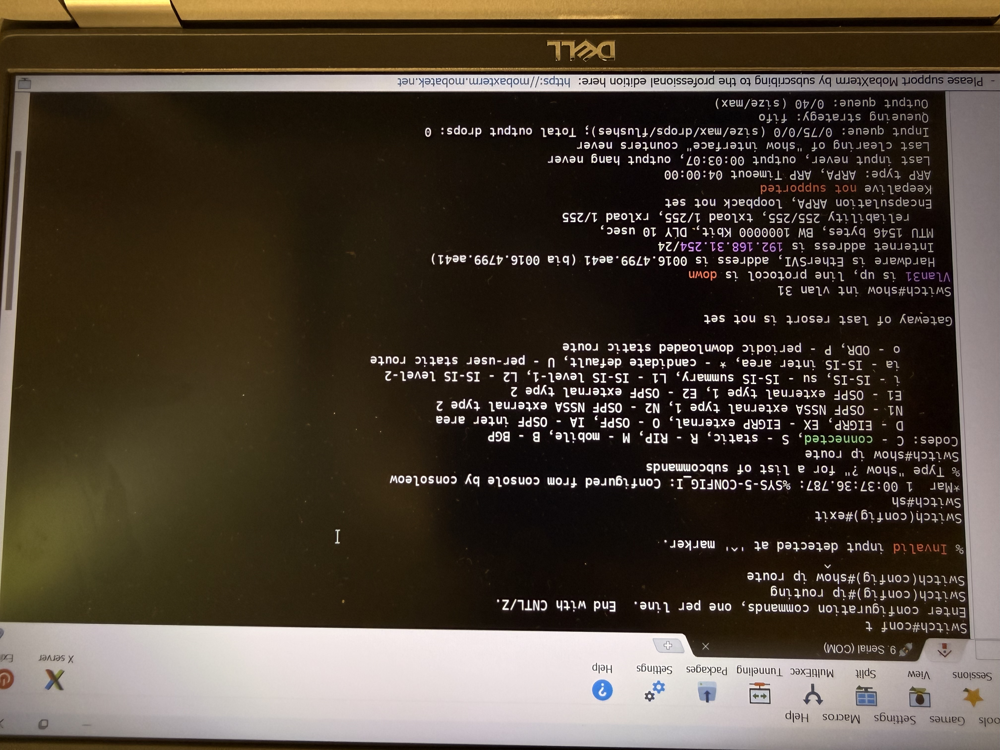
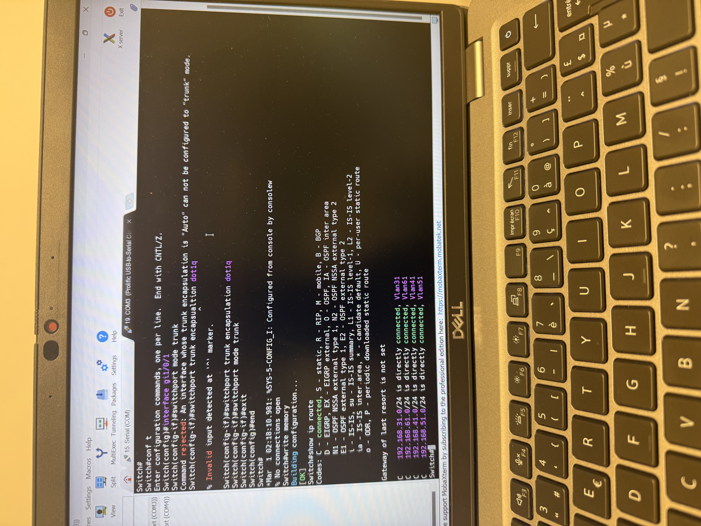
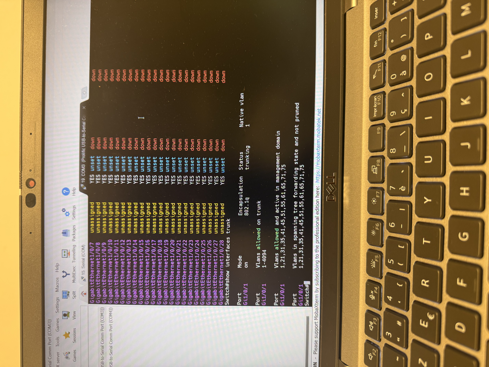
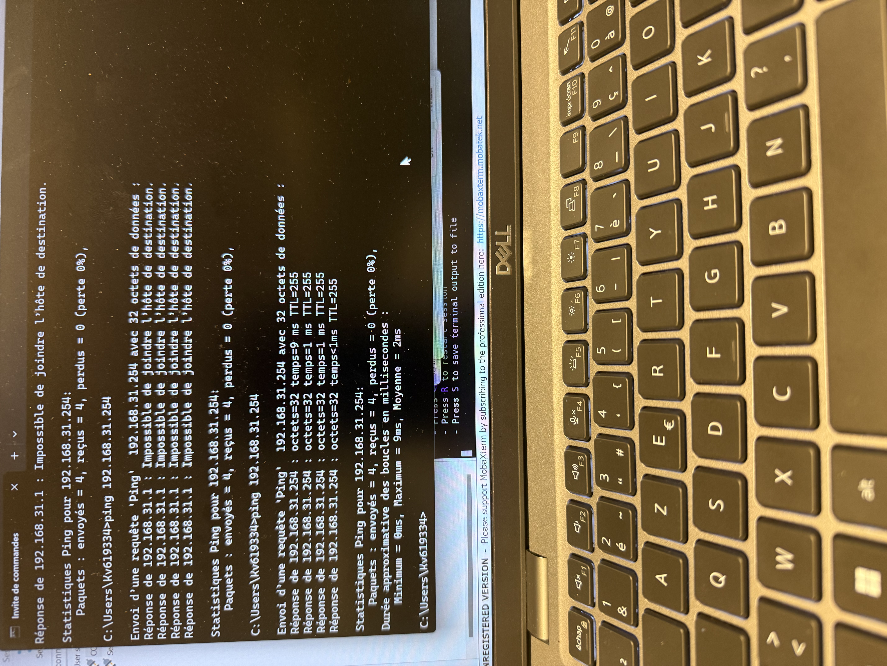
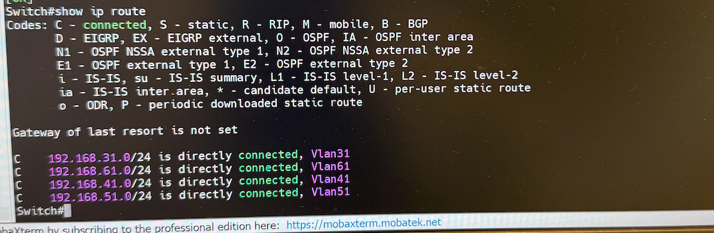

Commutation & Routage inter-VLAN
Configuration d'une infrastructure de commutation multi-VLAN sur Cisco 3750 et 2960 avec routage inter-VLAN par SVI et lien trunk 802.1Q — infrastructure M2L Ligues.
La mission
Mission réalisée seul le 13 avril 2026 au CFA CCI Martinique. L'objectif était de segmenter le réseau de la Maison des Ligues M2L en VLANs distincts par ligue sportive, d'assurer le routage inter-VLAN via un switch L3 Cisco 3750, et de configurer un lien trunk 802.1Q vers le switch de distribution Cisco 2960.
Matériel utilisé
- Cisco 3750 — switch L3, routage inter-VLAN par SVI
- Cisco 2960 — switch L2, distribution des ports
- Cisco 2800 — routeur, NAT overload vers SP2
- PC Windows + MobaXterm (console série, 9600 bauds)
Objectifs SP1
- Créer les VLANs 31, 41, 51, 61 avec noms sur les deux switches
- Configurer les interfaces SVI (passerelles) sur le 3750
- Activer
ip routingsur le 3750 - Configurer le trunk 802.1Q entre 3750 et 2960
- Valider le routage inter-VLAN par ping
Topologie réseau
Groupe X=1 — chaque ligue sportive dispose de son propre VLAN et sous-réseau /24. Le Cisco 3750 assure le routage entre VLANs via ses interfaces SVI.
| Ligue | VLAN | Réseau | Passerelle (SVI 3750) | Ports 2960 |
|---|---|---|---|---|
| Badminton | 31 | 192.168.31.0/24 | 192.168.31.254 | Fa0/1 – Fa0/5 |
| Escrime | 41 | 192.168.41.0/24 | 192.168.41.254 | Fa0/6 – Fa0/10 |
| Volley | 51 | 192.168.51.0/24 | 192.168.51.254 | Fa0/11 – Fa0/15 |
| Handball | 61 | 192.168.61.0/24 | 192.168.61.254 | Fa0/16 – Fa0/20 |
| Admin / LAN | — | 172.21.0.0/16 | 172.21.0.254 (Gi1/0/24) | — |
Configuration Cisco 3750
Création des VLANs, interfaces SVI avec adresses de passerelle, activation du routage IP et configuration du port trunk Gi1/0/1 vers le Cisco 2960.



ip routing



Configuration Cisco 2960
Les VLANs 31, 41, 51 et 61 sont créés sur le 2960 avec leurs noms, les ports access assignés par ligue, et le port Gi0/1 configuré en trunk vers le 3750.

Tests & résultats
Validation du routage inter-VLAN par pings croisés entre ligues, et vérification de la table de routage et des interfaces sur le 3750.




Ce que j'ai appris
Commutation VLAN
Création et assignation de VLANs sur switches L2 et L3, configuration des ports access et trunk 802.1Q.
Routage inter-VLAN
Configuration des SVI (Switch Virtual Interfaces) comme passerelles de chaque VLAN et activation de ip routing sur le 3750.
NAT & accès WAN
Configuration du Cisco 2800 avec NAT overload, ACL de traduction et routes statiques retour pour l'accès Internet des VLANs.